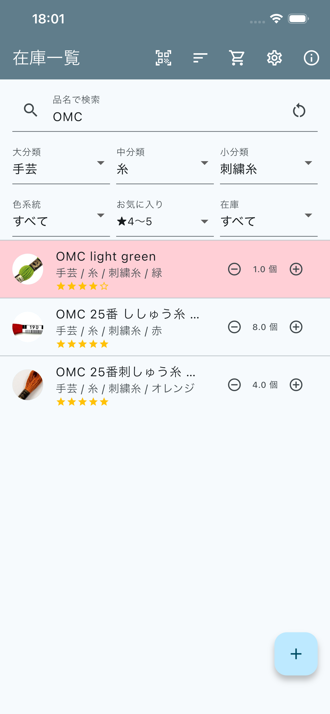
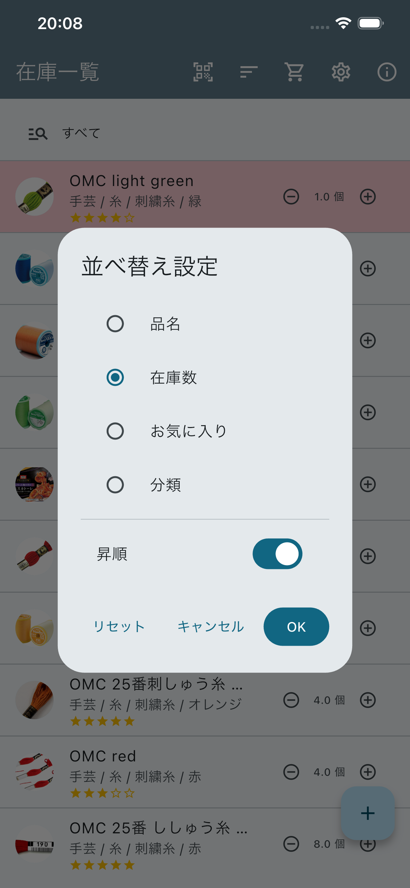
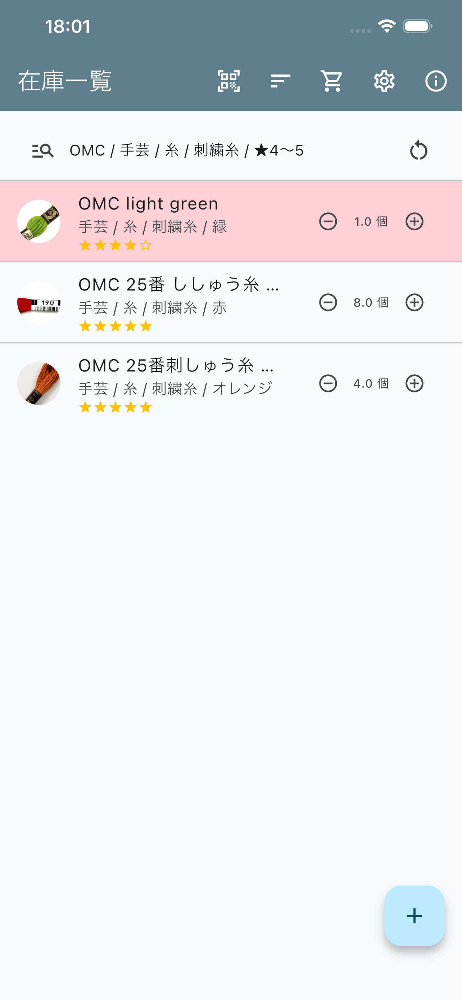
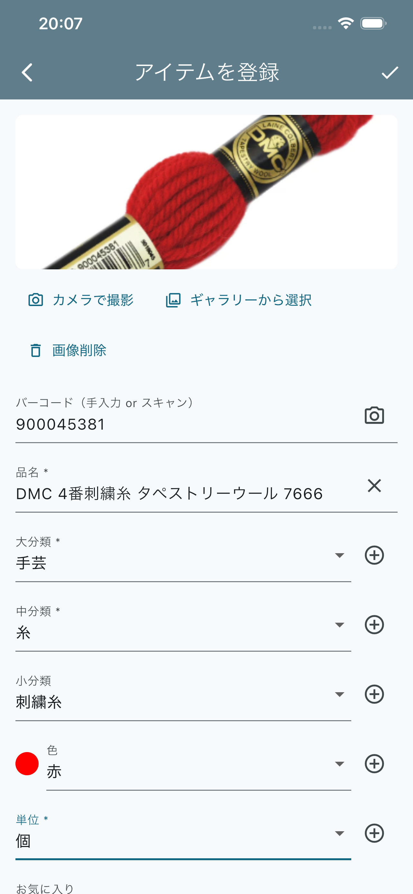
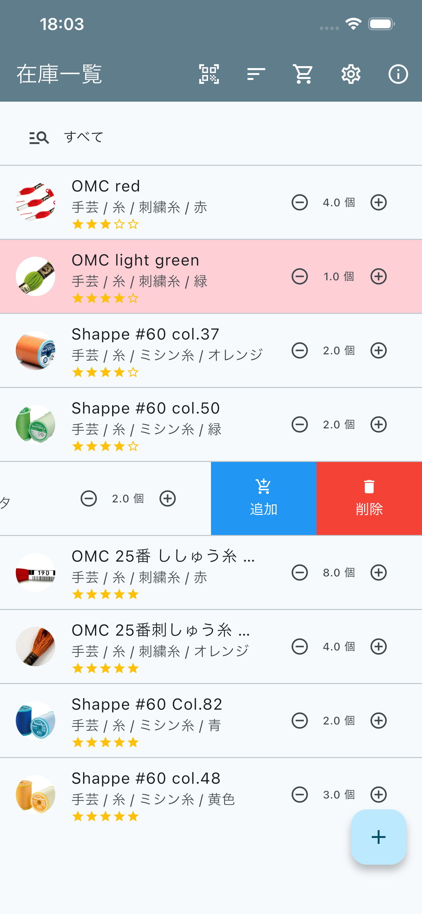
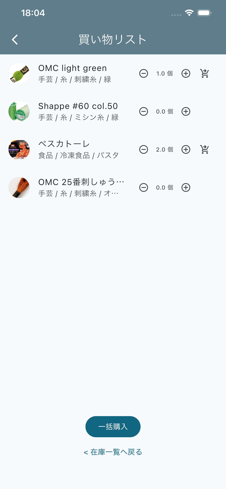
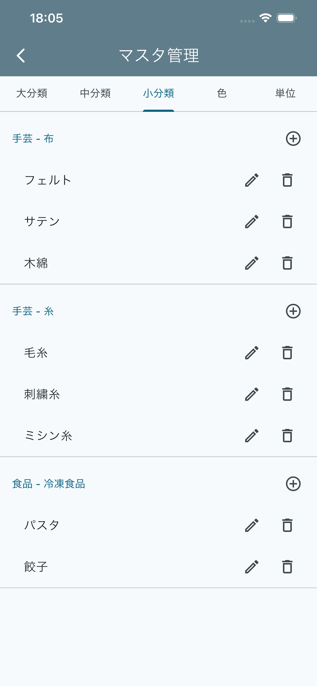

最終更新日: 2026年9月13日 ／ 対応バージョン: v2.1.0
「my在庫(My Inventory)」は、手芸材料や食品ストックなど、身の回りの在庫を 分類・写真つきで管理できるアプリです。このページでは、各画面の使い方を 画面キャプチャ付きで説明します。
アプリ起動後、最初に表示されるのが在庫一覧画面です。登録したアイテムが リスト表示され、品名・大分類/中分類/小分類/色・お気に入り度・在庫数を 確認できます。

バーコードアイコンをタップするとカメラでバーコードをスキャンできます。 登録済みのバーコードならアイテム編集画面が、未登録のバーコードなら 新規登録画面が開きます（商品名は自動検索されることがあります）。
（並べ替え）アイコンをタップすると「並べ替え設定」ダイアログが 開きます。「品名」「在庫数」「お気に入り」「分類」の中から並べ替えの 基準を選び、下部のスイッチで昇順／降順を切り替えられます。 「分類」を選んだ場合は、大分類→中分類→小分類の順に階層的に 並べ替えられます。リセットボタンでデフォルト （品名の昇順）に戻せます。設定した並べ替え条件はアプリを終了しても 保持され、次回起動時にも引き継がれます。

品名によるキーワード検索のほか、「大分類」「中分類」「小分類」 「色系統」「お気に入り」「在庫」の各条件で絞り込みができます。 条件をリセットしたいときは、検索欄右側の ↻（リセット） アイコンをタップしてください。
検索欄左の虫眼鏡アイコンをタップすると、検索条件エリアを1行に まとめた縮小表示に切り替わります（現在の条件が「/」区切りで 表示されます）。もう一度アイコンをタップすると元の表示に戻ります。

各アイテムの右側にある −／＋ ボタンで、その場で 在庫数を1ずつ増減できます。在庫数が「在庫不足の目安」以下になった アイテムは、行全体が 薄い赤色 でハイライトされ、ひと目で分かるようになっています（図1のリスト1行目）。
アイテムの行をタップすると、そのアイテムの編集画面が開きます。
在庫一覧画面右下の ＋ ボタンで新規アイテムを登録できます。 既存アイテムをタップした場合は編集画面が開き、同じ項目を変更できます。

登録・編集できる主な項目は次のとおりです。
編集画面右上のチェックアイコンで保存、ゴミ箱アイコンでアイテムを 削除できます（削除前に確認ダイアログが表示されます）。
在庫一覧の各アイテムを左方向にスワイプすると、 「買い物リストに追加」と「削除」のボタンが現れます。すでに 買い物リストに入っているアイテムの場合は「除外」ボタンに変わります。

ポイント: 「削除」はアイテム自体をアプリから完全に削除する操作、 「追加／除外」は買い物リストへの出し入れだけを行う操作です。誤って 削除しないよう、ボタンの色（追加＝青、削除＝赤）とアイコンで見分けてください。
在庫一覧画面右上の アイコンから買い物リスト画面を開けます。 在庫一覧でスワイプして追加したアイテムがここに一覧表示されます。

在庫一覧画面右上の アイコンからマスタ管理画面を開けます。 アイテム登録時に使う「大分類」「中分類」「小分類」「色」「単位」を タブで切り替えながら追加・編集・削除できます。

在庫一覧画面右上の アイコンからアプリ情報画面を開けます。 アプリのバージョン確認、このページ（このアプリの使い方）や プライバシーポリシーへのリンクを確認できます。
↑ 先頭に戻るLast updated: September 13, 2026 / Applies to: v2.1.0
"My Inventory" helps you manage household stock — craft supplies, food stock, and more — organized by category with photos. This page walks through each screen with screenshots.
The item list screen is shown first when you open the app. It lists every registered item along with its name, department/category/ subcategory/color, favorite rating, and quantity.
Tap the barcode icon to scan a barcode with the camera. A known barcode opens the item's edit screen; an unknown one opens the registration screen (the product name may be looked up automatically).
Tap the (sort) icon to open the "Sort Settings" dialog. Choose a sort key — Name, Quantity, Favorite, or Classification — and use the switch at the bottom to toggle ascending/descending order. When sorting by Classification, items are ordered hierarchically by department, then category, then subcategory. Tap Reset to return to the default (Name, ascending). Your sort settings persist even after closing the app.
Besides free-text search by name, you can filter by department, category, subcategory, color group, favorite rating, and stock status. Tap the ↻ (reset) icon next to the search field to clear all active filters.
Tap the magnifier icon on the left of the search field to collapse the filter area into a single summary line (active conditions are joined with "/"). Tap the icon again to expand it back.
Use the −/+ buttons on the right of each item to change its quantity by 1 on the spot. Items at or below their "low-stock threshold" are highlighted with a light red row so they stand out at a glance (see the first row in Figure 1).
Tap an item's row to open its edit screen.
Tap the + button at the bottom-right of the item list to register a new item. Tapping an existing item opens the same form for editing.
Fields you can set:
Tap the checkmark icon at the top right to save, or the trash icon to delete the item (a confirmation dialog appears first).
Swipe an item to the left in the item list to reveal "Add to shopping list" and "Delete" buttons. If the item is already in the shopping list, the button changes to "Remove".
Note: "Delete" permanently removes the item from the app, while "Add / Remove" only affects the shopping list. Check the button color (Add = blue, Delete = red) and icon before tapping to avoid deleting by mistake.
Open the shopping list from the icon at the top of the item list. Items you swiped-to-add on the item list appear here.
Open master data management from the icon at the top of the item list. Switch between tabs to add, edit, or delete the departments, categories, subcategories, colors, and units used when registering items.
Open the app info screen from the icon at the top of the item list. It shows the app version and links to this help guide and to the privacy policy.
↑ Back to top